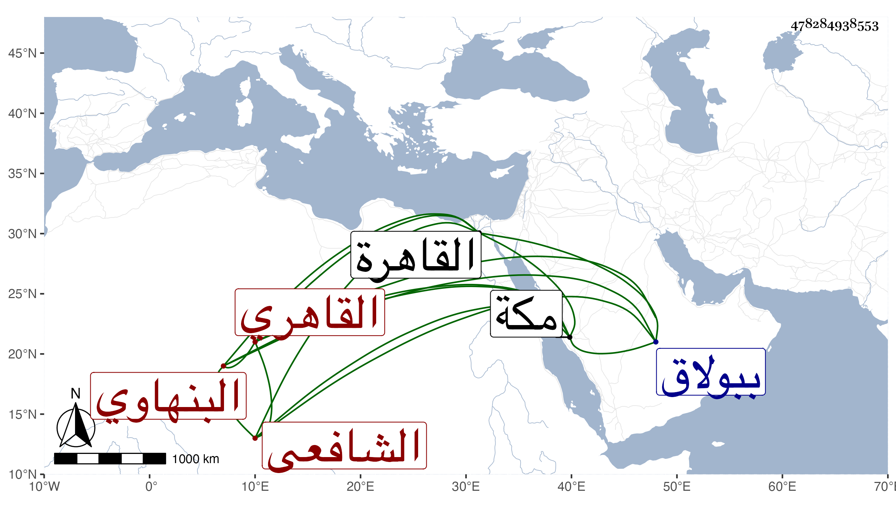

0902Sakhawi.DawLamic.ITO20230111-ara1.EIS1600.478284938553
Biography ID: 478284938553
442
محمد بن علي بن حسن بن يوسف العلاء أبو عبد الله بن البدر أبي الحسن البنهاوي ثم القاهري الشافعي . ولد تقريبا قبيل القرن وجاور وهو صغير مع والده وكان تاجرا بمكة فسمع بها على ابن صديق البخاري وغيره . وحدث سمع عليه الفضلاء سمعت عليه وكان ساكنا ربعة أسود اللحية يتكسب بالشهادة وبالسفر أحيانا لدمياط بنزر يسير ، وربما ناب في الحسبة ببولاق والقاهرة وأهين مرة بما ظهر بعد براءته منه . مات في شوال سنة أربع وستين رحمه الله .
